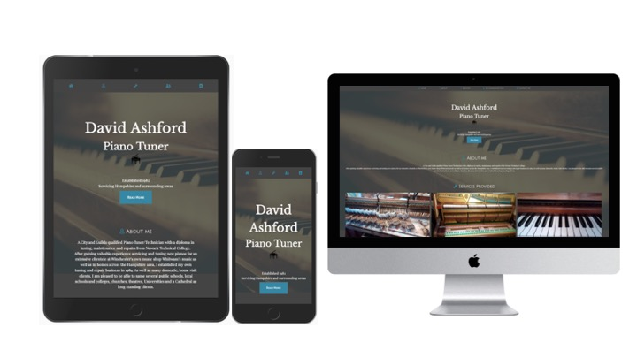

Christa Smith
I am a passionate developer and technology advocate, who enjoys creative problem solving and using the latest technologies to realise innovative solutions. Having taken on both technical and client facing roles, I believe I can be an effecitve part of any team, whislt remianing a strong individual contributor from a technical standpoint.
Skills & Languages
Experience
Microsoft
Technical consultant
TBC
University of Surrey (2019)
Bsc Computing & Information Technology
Attained a first-class honors degree from the University of Surrey.
The University of Surrey Computing Society (2018-2019)
President
CompSoc is The University of Surrey's Department of Computing Society, which aims to connect and support those with interests in Computer Science and related fields. We organise social, academic and industrial events. Responsibilities: - Oversee all aspects of the society - Create new initiatives and events for the society - Collaborate with our university department to maximise our society’s resources and provide better events for our members - Build working relationships with external groups and individuals
Expedia Group (Industrial Placement Year 2017-2018)
Software Engineer
Working in two brands (Expedia and EPS) during my time. Developing both front and backend applications. Technologies include: Java, Spring, AWS, React.js, JavaScript, Sass, Docker. Outside of my day to day, I was also involved with campus recruitment, running a series of coding lessons for those in business facing roles and organising a women in STEM events.
University of Surrey (2015-2019)
Lab Helper & Applicant/Open day helper
As a lab helper I assisted and mentored younger students throughout the course of two university modules: Object Oriented Programming and Software Engineering. In addition, I was an applicant day helper throughout my time at university which included giving presentations about my time at university, my role in CompSoc and general assistance throughout all applicant & open days held by the computer science. department
Achievements
Diversity & Inclusion Efforts
Diversity and inclusion is something that I have decicated time towards both during university and throughout my placement year at Expedia. As president of the computing society I decided to make it a priority for our society and so we hosted a number of events including: women coding meet ups, LGBTQ+ night showing 'The imitation game' and many more. In additon, whilst at Expedia I organised and hosted a Women in Tech event at our office for graduates around the UK to attend. I also participated in pride london on behalf of Expedia.
Projects
Freelance Web Design & Creation
Developing and launching responsive websites for clients, using technologies including CSS/HTML5/React/JS and more. Structuring projects throughout all developement stages including: regular meetings/communication with the clients, design, implementation and finally hosting.
A Computer Vision-Based Fall Detection System for the Elderly
The project tackled the issue of elderly people experiencing a high number of falls in the home and the time taken to provide assistance as a result of the fall, by investigating the potential of vision-based fall detection systems and as a result of this, creates an end-to-end proof of concept system, capable of detecting falls with an accuracy of 92% in controlled environments. The project explores and makes use of Convolutional Neural Networks in order to perform the classification of fall events and then leverages this as part of the overall functionality. Lastly, this project creates a progressive web application which allows a user to monitor and track the person at risk.